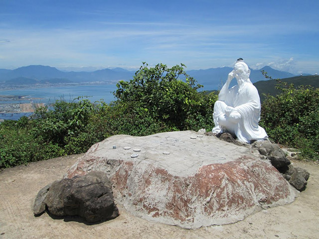
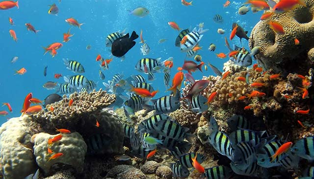

Nằm cách trung tâm thành phố 8 km, bán đảo Sơn Trà là khu rừng nguyên sinh có khí hậu mát mẻ quanh năm.
Với cảnh quan thiên nhiên tuyệt đẹp và những điểm đến hứa hẹn những điều bất ngờ và thú vị,
bán đảo Sơn Trà là cái tên được lọt vào list những điểm đến cần đặt chân tới!
Bán đảo Sơn Trà nằm ở đâu ?
Bán đảo Sơn Trà thuộc địa bàn phường Thọ Quang, quận Sơn Trà. Nơi đây một khu rừng nguyên sinh có khí hậu trong lành,
mát mẻ quanh năm. Điểm đặc biệt của bán đảo Sơn Trà là có 3 mặt giáp biển,
mặt còn lại giáp thành phố. Đây là bán đảo duy nhất của Việt Nam có hệ sinh thái rừng gắn với biển.
Bán đảo Sơn Trà được phủ một màu xanh thẳm của rừng nguyên sinh rộng 4.439ha đất liền, dài 13km, cao trung bình 350m,
hoà cùng màu xanh ngọc bích của nước biển Đông bao quanh.
Bán đảo Sơn Trà được xem là lá chắn khổng lồ, là buồng phổi xanh của thành phố Đà Nẵng.
Cách di chuyển
Đường đi bán đảo Sơn Trà vô cùng thuận tiện và dễ dàng.
Du khách có thể tham quan, du ngoạn và trải nghiệm bằng phương tiện riêng của mình.
Ngoài ra khách du lịch có thể thuê xe máy, thuê taxi, xe ô tô du lịch nếu đi gia đình, nhóm người.
Có rất nhiều con đường dẫn đến bán đảo Sơn Trà như xuất phát từ trung tâm thành phố, đi qua cầu Rồng, cầu Trần Thị Lý,...
sau đó đi dọc đường Võ Nguyên Giáp về phía Đông Bắc là đến nơi.
Bán đảo Sơn Trà vừa giáp thành phố, vừa giáp biển nên du khách cũng có thể khám phá Sơn Trà bằng đường thủy.
Một trong những điều thú vị nhất mà có lẽ chỉ ở Sơn Trà mới có, đó chính là du khách có thể khám phá, chiêm ngưỡng vẻ đẹp của bán đảo Sơn Trà bằng trực thăng.
Thời tiết ở đây như thế nào ?
Khí hậu ở bán đảo Sơn Trà, Đà Nẵng có 2 mùa rõ rệt: mùa mưa và mùa khô. Mùa khô ở Đà Nẵng thường bắt đầu từ tháng 3 đến hết tháng 9.
Đây là khoảng thời gian lý tưởng nhất để tham quan bán đảo Sơn Trà.
Lúc này, thời tiết có nắng đẹp, khô ráo, mát mẻ, thoáng đãng, ít có bão.
Những tháng khác (từ cuối tháng 9 đến tháng 11) rơi vào mùa mưa, thường có bão, sương mù nhiều, gây khó khăn khi di chuyển.
Các điểm đến hấp dẫn không thể bỏ qua
Chùa Linh Ứng
Toạ lạc tại khu vực Bãi Bụt của bán đảo Sơn Trà, cách trung tâm thành phố Đà Nẵng khoảng 18km,
chùa Linh Ứng là địa điểm linh thiêng nổi tiếng nhất của Đà Nẵng.
Chùa Linh Ứng có kiến trúc hoành tráng, tinh xảo, gồm nhà tổ, tăng đường, thư viện, chánh điện, giảng đường …
Ngôi chùa là sự kết hợp hài hoà giữa nét đẹp truyền thống và hiện đại.
Điểm nhấn quan trọng và nổi bật nhất chùa Linh Ứng chính là tượng đài Phật Quan Thế Âm.
Đây là bức tượng lớn nhất Việt Nam với độ cao lên tới 67m. Tượng Phật Quan Thế Âm lưng tựa vào núi,
đôi mắt hướng ra biển khơi rộng lớn, một tay bắt ấn tam muội, tay kia cầm bình nước cam lồ ban phước lành cho dân.
Đây cũng là nơi được du khách tới cầu bình an, đồng thời ngắm nhìn toàn cảnh thành phố từ trên cao.
Đỉnh Bàn Cờ
Theo truyền thuyết, ngày xưa, có hai vị tiên ông ngồi đánh cờ ở đây nhưng không phân thắng bại.
Một hôm, ông đã đánh thua ván cờ do bị sao lãng bởi hình ảnh cô tiên nữ hạ giới quá xinh đẹp.
Ông liền đập bàn cờ và bay về trời. Cuối cùng, chỉ còn một ông tiên ngồi lại trầm ngâm bên bàn cờ.
Từ đó, người ta gọi đây là đỉnh Bàn Cờ.
Đường lên đỉnh Bàn Cờ đẹp như tiên cảnh vậy.
Chạy xe men theo đường núi quanh co, uốn khúc sẽ là trải nghiệm đáng nhớ trong hành trình khám phá bán đảo Sơn Trà xinh đẹp.
Đôi lúc, bạn sẽ thấy những bãi biển xanh như ngọc khuất lấp sau những rặng cây hiện ra rất đẹp và tươi mới.

Cây đa ngàn năm
Một trong những điểm đến tuyệt vời ở bán đảo Sơn Trà mà du khách không nên bỏ lỡ là cây đa ngàn năm. Cây cổ thụ này nằm ngay trên lối rẽ
khác cùng tuyến đường lên đỉnh Bàn Cờ.
Cây đa ngàn năm có hơn 800 năm tuổi, là cây đa lớn nhất Việt Nam với chu vi thân là 10m, gồm 26 rễ phụ và mỗi rễ cao 25m.
Với những tán lá khổng lồ xoè rộng, cây đa ngàn năm là nơi nghỉ chân của du khách sau những giờ tham quan mệt mỏi.
Các bãi tắm tuyệt đẹp
Ở Sơn Trà có rất nhiều bãi tắm đẹp dành cho du khách.
Bạn có thể đến Bãi Nam - một trong những bãi biển tuyệt đẹp với những dịch vụ du lịch hoành tráng, hứa hẹn
đem đến cho du khách những trải nghiệm du lịch tuyệt vời.
Hay là bạn có thể đến với bãi Bụt. Đứng từ chùa Linh Ứng nhìn xuống, vẻ đẹp
hoang sơ thanh khiết của bãi Bụt hiện ra trước mắt khiến bất cứ ai cũng mong muốn đặt chân tới đây dù chỉ một lần.
Nơi đây có đầy đủ những trò chơi thể thao mạo hiểm, lướt ván, lặn san hô,... đảm bảo cho bạn có những trải nghiệm thật tuyệt vời nhất.
Nếu bạn là người thích sống ảo thì không nên bỏ lõ bãi đá Obama (hay là Bãi Đa).
Bãi đá Obama có nhiều bãi đá lớn nhỏ trải dài, nối tiếp nhau, có các cây cầu bằng gỗ để đi ra.
Nước biển ở đây trong xanh và mát mẻ, mang lại cảm giác thư giãn, yên bình cho du khách

Những trải nghiệm tuyệt vời không thể bỏ lỡ
Lặn ngắm san hô

Ngắm san hô là hoạt động thể thao mới mẻ và thú vị ở bán đảo Sơn Trà.
Những rặng san hô lung linh, rực rỡ dưới đáy biển luôn kích thích sự hiếu kì của du khách.
Với sự kĩ càng, kĩ lưỡng trong chuẩn bị về trang phục, các thiết bị,
khách du lịch có thể nhanh chóng làm quen và tự có những trải nghiệm chiêm ngưỡng san hô với đầy đủ hình dáng và màu sắc dưới biển khơi.
Với nhiều hình thức ngắm san hô các nhau, bạn luôn được đảm bảo an toàn dưới sự hướng dẫn của những người dân nơi đây,
tất cả những gì bạn cần làm đó là thưởng thức và tận hưởng.
Ngắm Voọc chà và chân nâu
Bán đảo Sơn Trà là nơi cư ngụ của rất nhiều loài vật quý hiếm trong đó có loài được mệnh danh là nữ hoàng loài linh trưởng – Voọc chà và chân nâu.
Đây là loài nằm ở mức nguy cấp trong danh sách đỏ của Việt Nam.
Voọc luôn đi ăn vào buổi sáng sớm hay đầu giờ chiều và hay đi theo đàn, thức ăn của chúng là những lá non, dại ở trên ngọn cây cao.
Để được chiêm ngưỡng rõ hơn loài động vật quý hiếm này, hãy đi thật nhẹ nhàng để chúng biết bạn vô hại và nhớ mang theo ống nhóm
để có thể quan sát được tốt hơn nhé!
Những đặc sản ở Sơn Trà
Hải sản là món ăn không thể bỏ qua khi đặt chân đến Sơn Trà.
Sơn Trà nổi tiếng với các món: cá chình, cá mú, cá lăng, cá chim, tôm sú, hôm hùm, bạch tuộc, ba ba, ốc, mực lá, ghẹ … được tẩm ướp, xào nướng rất hấp dẫn.
Nếu du khách muốn mua một ít hải sản thì nhớ ghé khu chợ ở ngã ba Hoàng Sa – Lê Đức Thọ.
Đây là nơi bán hải sản tươi ngon nhất, bạn có thể tự tay lựa chọn thoải mái mà giá cả rất hợp lý nhé.
Chiều về vừa ngắm hoàng hôn, vừa nhâm nhi chút bia cùng hải sản thì tuyệt cú mèo luôn.
Ngoài những thức quà đến từ biển khơi thì những món ăn từ núi rừng hùng vĩ cũng được nhiều du khách săn đón.
Rau rừng ở đây có rất nhiều loại như rau dớn, rau sung, rau bớn, rau cách,… được chế biến theo nhiều cách khác nhau như nấu canh, luộc, xào,…
Cho dù chế biến theo cách nào cũng mang đến một hương vị rất ngọt và sạch của một món quà đậm chất tự nhiên.
Có mồi ngon nhất định không thể thiếu rượu. Rượu dừa chính là hình ảnh và thương hiệu của bán đảo Sơn Trà.
Rượu dừa được làm từ nếp cái và men để trong trái dừa nhỏ, nước ngọt. Rượu dừa có vị cay nồng, thanh ngọt của dừa rất dễ uống, khiến nhiều người thích thú.